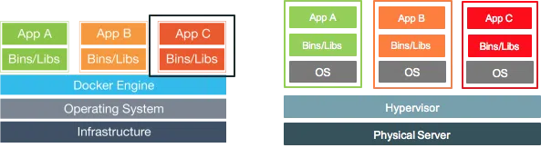
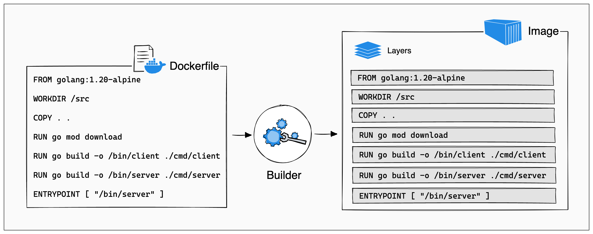

If you’ve been doing data science for long enough you’ve encountered Docker. Maybe you may have made a Docker container and didn’t really know what you were doing, or someone told you that you should make one, or you’re thinking about different strategies for putting your data science jobs into production. Either way, this video is for you.
As data scientists we make all sorts of things. You definitely made a pdf report, probably some pretty looking charts, maybe you even tuned a fancy machine learning model, or made an interacting web application to help your internal stakeholders explore their own data. For many of the things that data scientists make, it can be hard to get that thing you’ve built, I’ll refer to this as an artifact, off of your own machine. Whenever you’ve built something that you either want to automate or make available to other people or systems, Docker can likely help.
To understand Docker, it can be helpful to think about what kind of problems it solves. Lets work through an example: you’ve done a market segmentation analysis that you want your colleague to review. So you send her over your script and the data. She tries running it and it doesn’t work. Why? Well, think about all of the things that you didn’t send. Your script used additional packages to make the analysis easier. For one we can’t be sure that she has those packages or even the right version of those packages. And then, on top of that, some of those packages require an additional system level dependency which wasn’t captured. All of this leaves a lot of room for failure for when she tries to run your script.
Now let’s extend this example of your coworker’s computer, to a server. When we need to run things in production, that is almost always done on a server. Now when you send over your script to be ran on that server the same problem arises. Does that server have your packages? Does it have the right versions? And does it have the same system dependencies? What if there is another script already on the server that has to be ran but with an older version of the package you used and conflicts with the one you used? You can’t even run your script on that server if you wanted to because you’d break outstanding code.
One of the ways that we can solve this by using Docker. Docker creates what are called “containers.” If we over simplify, these containers are self contained computers. Containers are designed to be run just one application at a time. Since their jobs are narrow in scope, they should be very small and entirely self contained—I swear I’m not trying to use the word “contain” this much on purpose.
Docker containers have everything you need to run an application: from the operating system, to the programming languages an application might use, the code, as well as the libraries and packages needed to run it. What’s even better is that we define our Docker containers using code. So we can keep track of the container definitions using Git. This also makes sharing them very very easy.
Containers are super powerful because they can run on any operating system that is supported by the Docker engine. The Docker engine differs from virtual machines (VMs). VMs build a complete virtual machine with a copy of an operating system and everything. Docker on the other hand mostly fakes it. Each container shares the kernel from the underlying operating system. Hang with me here. I’m no computer hardware wiz but with a little bit of thinking we can all get there.

The kernel, if I understand it correctly, is the core component of an operating system (OS). Each OS has one: MacOS, Windows, and Linux. The kernel is like the wizard behind the curtain handling everything from memory management, task handling, and communication between applications and the hardware. This means that each Docker container that you run, even if it is Ubuntu or Alpine Linux or whatever, is actually using the kernel from the machine running it. So you can create a Docker container with Ubuntu operating system that is running on your MacOS. Quite powerful! These containers can be picked up and moved from place to place so long as the computer it goes to is able to run the Docker engine.
So, how do we actually create Docker containers? Creating containers is done in three steps:
Write the Dockerfile which describes how it will be built
At the core, every Docker container is based on a Dockerfile. A Dockerfile is a plain text file that contains the set of instructions that define how the Docker image will be built. This includes things like the operating system it will use, copying any files that need to be included, or installing additional libraries. While I wouldn’t call Docker a programming language, it does have its own syntax that defines how these images get built.
Dockerfiles are built up using instructions. Instructions are a number of reserved words written in all caps. If you understand just five of them you can get very very far. Let’s start with the most important one.
This is an example of a Dockerfile that will launch a REST API.
Warning in readLines("docker-plumber/Dockerfile"): incomplete final line found
on 'docker-plumber/Dockerfile'
# Step 1: Choose your base image FROM rocker/r-ver:4.3.0 # Step 2: Install your system dependencies RUN apt-get update -qq && apt-get install -y --no-install-recommends \ libcurl4-openssl-dev \ libicu-dev \ libsodium-dev \ libssl-dev \ && apt-get clean # Step 3: Install R packages RUN Rscript -e "install.packages('plumber')" COPY plumber.R /api/plumber.R # Start 4: Do something # Need to expose port for app EXPOSE 8000 ENTRYPOINT ENTRYPOINT ["R", "-e", "plumber::plumb('/api/plumber.R')$run(host = '0.0.0.0', port = 8000)"]
By the end of this video you’ll be able to understand, at least for the most part, what is happening in this Dockerfiler.
FROM
FROM specifies from which Docker image you want to base yours on. It’s not expected of you to be able to build an entire Docker image from the ground up. People and organizations have already built many very useful Docker containers that have most of what you would already need. The rest of it is tailoring the container to your specific needs.
The FROM instruction simply requires you to type the name of the base image that you want to build on top of. These images are typically from something called a registry. It’s kind of like a Github but for Docker.
Note
The most common and default of these is Docker hub. However each cloud provider has their own that you might want to use to deploy
The name of the Docker images follows the general format of username/image-name:tag
RUN
This instruction is very important! It allows to run any shell command in the container. The results of the instruction persist throughout the remainder of the Docker image. RUN instructions are pivotal to enabling us to do things like install new libraries or configuring the image using a shell script.
Most importantly RUN will often be used to install system dependencies that you will need for your packages or other software.
COPY
The COPY instruction is very straight forward. I’m sure you already know what it does. Yup, it copies files from your operating system into the Docker image itself. It works much like the cp shell command. We use this to do things like copying the source of applications into the Docker container.
ENTRYPOINT
The ENTRYPOINT instruction is very consequential and frankly the most confusing of the bunch. In essence, it defines what the Docker container will actually do once it is spun up. If you know how to run an application using the command line for example by running python3 app.py or Rscript app.R.
To use ENTRYPOINT we provide an array of arguments that we provide to the shell. Each argument is quoted and is an element itself in the array. For example if we want to run a Flask app we will have ENTRYPOINT ["python3", "/app/app.py"]. Or if we want to run a Plumber API we use the following ENTRYPOINT ENTRYPOINT ["R", "-e", "plumber::plumb('/api/plumber.R')$run(host = '0.0.0.0', port = 8000)"]. This is more verbose but the idea is the same. We pass in the R executable and we use -e to execute a line of code. That line of code is the plumber::plumb() function to launch the API.
Both of these ENTRYPOINTs will launch a web application that we can interact with. But there’s one other instruction that we need to familiarize ourselves with. Thats EXPOSE. Web applications, those build with Plumber, Flask, Shiny, or FastAPI for example, have to be able to “listen” or accept incoming requests on a specific port. You can see in the plumber example we are using port 8000 which is the same port that our flask app is using
Because Docker always is as small as it can possibly be by default, no ports are available for it to listen to. We have to tell the image to EXPOSE a port with the EXPOSE instruction. Doing this will let us interact with the web applications that are in the Docker container.
Docker Images & building them
From the Dockerfile we can build a Docker Image. The Dockerfile contained the instructions, now we will build the image, or the template.
At this point, if you are following along and want to do this with me, you will need Docker available to you. Head over and download Docker Desktop open it up. The application will handle creating the cli tool for you. I also recommend getting the Docker extension for VS code. It makes the build process a lot easier.
We can begin the build process using the docker build command. From VS code open the Dockerfile you want to build and press cmd + shift + p to bring up the command prompt. Select Docker Images: Build Image. Choose the Dockerfile from the drop down. Then choose a name to give the docker image that you want.
Naming Docker images
Docker images are somewhat like libraries themselves. We can build one and give it a name. But there can be different versions of the same image. We can denote these differences based on the tags. The name have the following structure image-name:tag-value. This is often helpful to keep track of versions of the Docker images you’ve built. There is also the concept of a latest image which is typically the most recent build.
Builds and Layers
When a Docker image builds, it runs through the steps specified in the Dockerfile and executes them consecutively. Each one of these instructions will be stored in a layer. Layers keep track of the changes that each instruction made. It’s somewhat like a Git diff between each subsequent step. Each of these instructions are cached so that when they are run once, they do not need to be ran again.

However, if you change an instruction, the cache gets invalidated from that point onward.
Tips for building
We can take advantage of this caching by putting all of the long running stuff and things that are unlikely to change at the top of the docker image. For example in the plumber API Dockerfile we have to install a fair amount of system dependencies and that can take a long time. We put it at the top of the image so we do not have to run that if we change any thing else later on. It makes rebuilding and testing differences later on much much faster!
Creating your container
Now that we’ve build the Docker image, we have a template to create our containers from. We’ve done the hard part.
Navigate to Docker desktop, then to images, then press the play button. This will start a docker container for you.
Using Docker Desktop
After you’ve started your container it will take you to the logs for the container itself.
Sometimes it is very helpful to be able to access the terminal from inside of a Docker container. Click the tab Terminal this will give you access to the operating system that the container is running.
Files tab will let you navigate the files in the container. Super helpful to verify if you’ve correctly copied files into the correct place.
Sometimes our Docker images can be bigger than we anticipate. We can inspect the layers to try and identify which instruction is the culprit`.
What should you containerize?
Web applications! To be overly simplistic, a web app is anything that can be served over http. These are primarily RESTful APIs or interactive applications.
You can also use containers to run scheduled tasks
Steps for Data Scientists
For the vast majority of scenarios for data scientists we can reduce Docker to 4 steps:
Choose an appropriate base image
Install the requisite system dependencies
Install the additional R or Python Packages
Specify an ENTRYPOINT (what to do when the app starts)